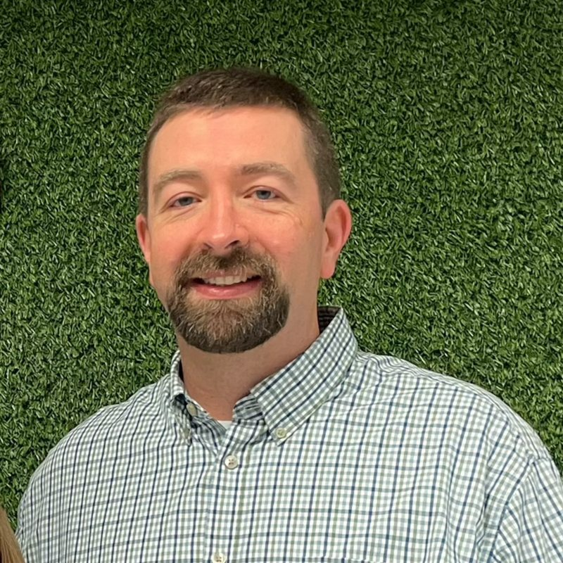

How Vital Technology Solutions Got Here
Vital Technology Solutions serves small to midsize businesses across Arkansas and surrounding states, including Texas and Oklahoma, from Benton. Many of the organizations we help depend on computers, networks, internet access, and business software every day, but they do not always need or want to manage a full internal IT department.

Led by Jacob Schultz, CEO, Vital Technology Solutions is shaped by a practical idea: IT support should be responsive, understandable, and built around how a business actually works.
Too many business owners have dealt with slow callbacks, confusing explanations, repeat problems, unclear billing, or vendors blaming each other when something breaks.
That frustration is why our work focuses on plain-English communication, proactive monitoring, remote support when it solves the problem quickly, and on-site help when it is needed. Our published service promises, including a five-minute-or-less response commitment and a one-hour-or-less emergency response commitment, reflect the standard we work toward when a client needs help.
Vital Technology Solutions (VTS) was founded in 2011 and has built its reputation on providing reliable, business-focused technology solutions. Our team brings extensive technical experience and industry-recognized certifications.
Certifications
These certifications reflect our technical expertise, but what matters most is how we put that knowledge to work, providing clear answers, reducing interruptions, and delivering technology solutions that support the business rather than slowing it down.
How We Show Up for Clients
Our work is practical, responsive, and centered on keeping business technology understandable.
Plain-English Communication
We believe a client should understand the issue, the risk, and the recommended next step. Clear communication helps owners and managers make better decisions without needing to become technical experts.
Proactive Support Before Problems Grow
Monitoring, maintenance, backup attention, and security awareness help reduce avoidable disruption. No IT provider can remove every risk, but a proactive approach gives businesses better visibility and fewer surprises.
Support Built Around the Business
Vital Technology Solutions offers customized packages based on business size, needs, and budget rather than forcing every client into the same model. That matters for organizations with different workstations, workflows, software, and growth plans.
Accountability When Something Goes Wrong
Technology will occasionally break, and clients need to know someone is taking ownership. Our satisfaction promise is simple: if something is not right, we work to make it right, and if we cannot, the service is free.

If IT Has Become Harder Than It Should Be, Let’s Talk.
Schedule a consult with Vital Technology Solutions to discuss what is working, what is frustrating your team, and what kind of support would fit your business. You will get a straightforward conversation, not a technical lecture.